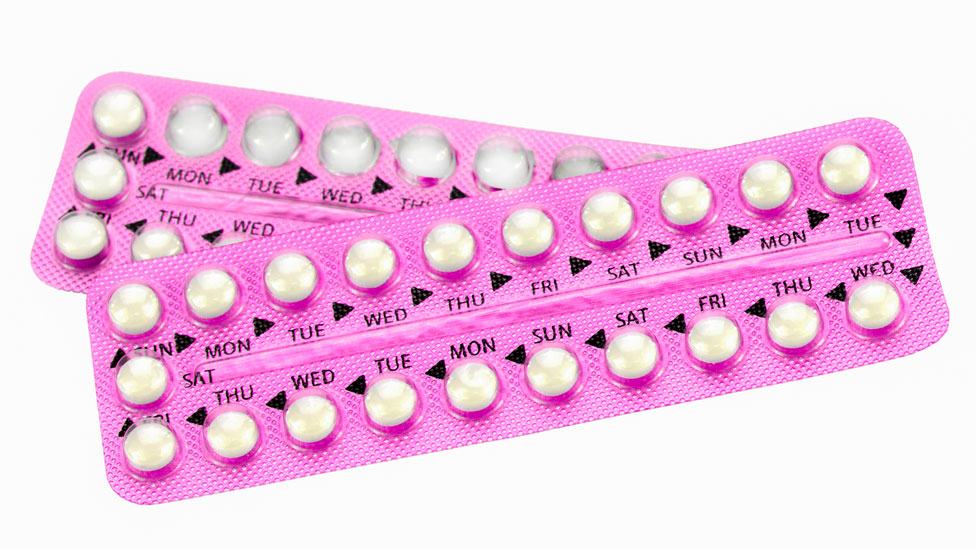

¿Qué es la pastilla anticonceptiva?
Es un medicamento de uso diario que contiene hormonas similares a las que produce el cuerpo de la mujer. Su función principal es evitar la ovulación y, por lo tanto, prevenir el embarazo.
Tipos de pastillas
- Combinadas: contienen estrógeno y progestina.
- Solo de progestina: recomendadas para mujeres que no pueden tomar estrógeno.
¿Cómo se toman?
Se toma una pastilla diaria a la misma hora durante 21 o 28 días, según el tipo. Es importante ser constante para mantener su efectividad.
Ventajas
- Reduce el riesgo de embarazo en más del 99% si se toma correctamente.
- Puede regular el ciclo menstrual y disminuir los dolores menstruales.
- Es reversible: al suspenderla, se puede recuperar la fertilidad rápidamente.
Consideraciones
No protege contra infecciones de transmisión sexual. Puede tener efectos secundarios como náuseas o cambios de humor, que usualmente desaparecen con el tiempo.
